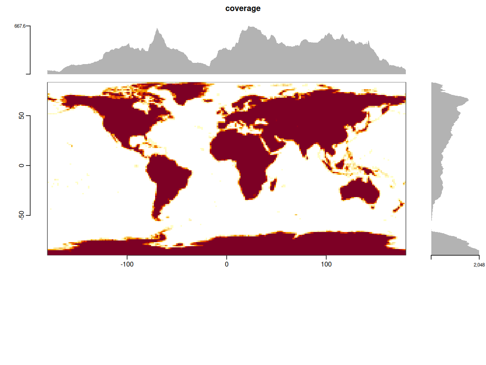
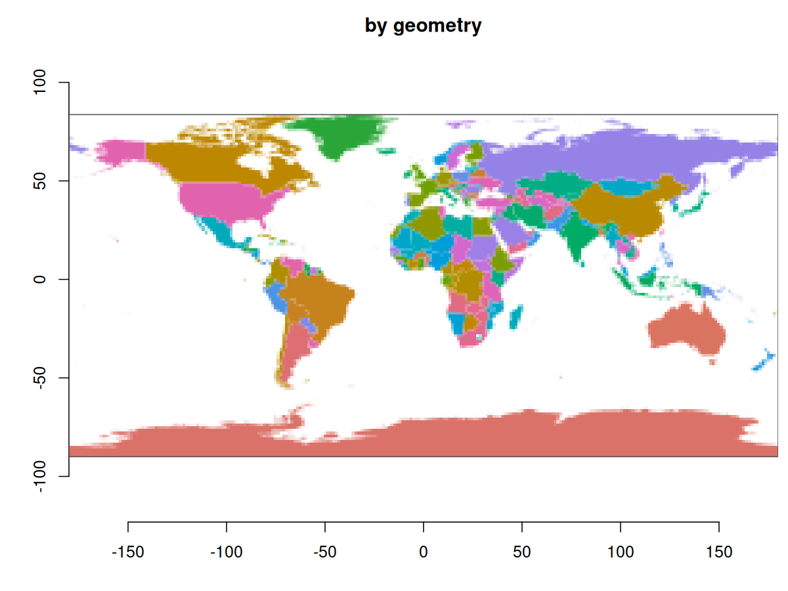
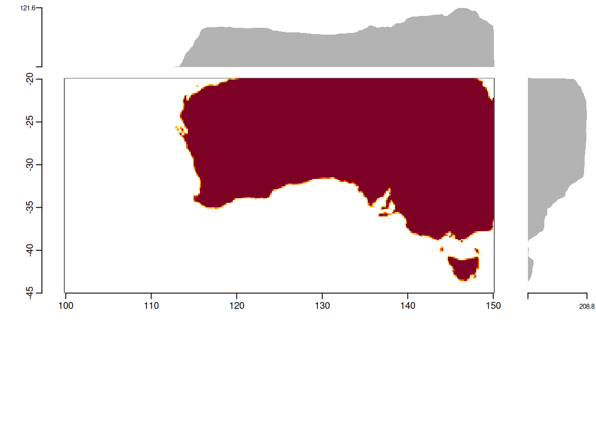
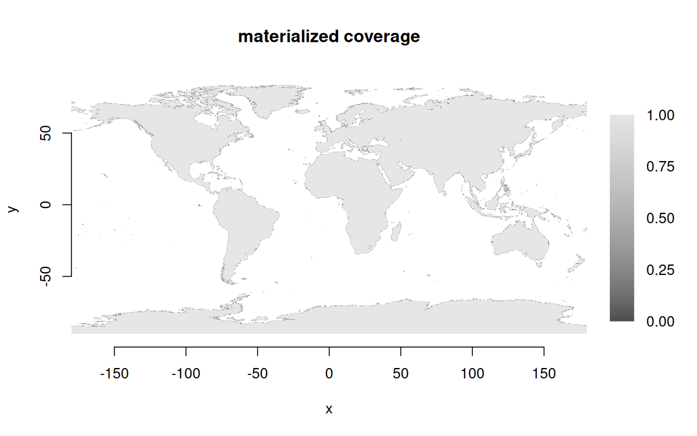

cbr is an experimental R package built on the controlledburn Rust crate. It rasterizes polygons, lines and points onto a regular grid and keeps the result sparse: polygon interiors as horizontal runs of fully covered cells, boundary cells with their exact coverage fraction, and nothing at all for the empty cells. A dense raster is something you ask for at the end, if you need it.
Status
Experimental. cbr explores the ideas in hypertidy/controlledburn and related hypertidy packages, but on a different foundation: the Rust crate is a pure port of the C++ core, and cbr is a thin binding to it via extendr. There is no connection to the controlledburn R package’s code or API, and no obligation to be compatible with it. This is deliberately a place to try things; ideas that work here may be folded back into the parent projects, where backwards compatibility matters more.
Two conventions differ from the parent that are worth knowing up front:
- Grid extents are
c(xmin, xmax, ymin, ymax), as interra::ext(). - Materialized rasters are in the layout of
gdalraster::read_ds(): a plain vector in row-major order from the top-left cell, with agisattribute (type,bbox,dim,srs,datatype). It is a stable format that needs no dependency to produce or consume, and it plugs intogdalrastertooling directly.
Installation
You need a Rust toolchain (cargo and rustc). Then
# install.packages("pak")
pak::pak("mdsumner/cbr")The burn object
cb_burn() takes anything wk::as_wkb() understands and returns a cb_burn: five data frames and the grid definition in attributes. Below geom is a set of polygons in longitude-latitude.
library(cbr)
## get some polygons in wk form however you like
geom <- geos::as_geos_geometry(geodata::world(path = tempdir()))
#> Cached as: /perm_storage/home/data/r_tmp/RtmpK3HJSy/gadm/gadm36_adm0_r5_pk.rds
b <- cb_burn(geom)
b
#> <cb_burn>
#> grid: 256 col x 123 row
#> extent: x[-180, 180] y[-90, 83.6562]
#> mode: coverage
#> tables: runs=718, edges=9441, lines=0, points=0, notes=0Called with just the geometry, the grid is the bounding box of the input at 256 columns, with the number of rows chosen for square cells. Supply extent and/or dimension to control it; a single dimension value is taken as the number of columns.
b_fine <- cb_burn(geom, dimension = 2048)
b_fine
#> <cb_burn>
#> grid: 2048 col x 988 row
#> extent: x[-180, 180] y[-90, 83.6562]
#> mode: coverage
#> tables: runs=12543, edges=84097, lines=0, points=0, notes=0The tables are the whole result. runs holds the interiors (one record per row per polygon per contiguous span), edges the boundary cells with their coverage fraction, and id is the 1-based position of the geometry in the input.
head(b$runs)
#> row col_start col_end id
#> 1 34 176 176 2
#> 2 34 178 178 2
#> 3 35 174 178 2
#> 4 36 173 177 2
#> 5 37 173 176 2
#> 6 38 173 175 2
head(b$edges)
#> row col fraction id
#> 1 51 79 5.113862e-03 1
#> 2 32 179 8.059877e-05 2
#> 3 33 175 1.664214e-01 2
#> 4 33 176 1.811728e-01 2
#> 5 33 177 6.814974e-02 2
#> 6 33 178 2.744977e-01 2Summarize and plot without materializing
Everything in summary() costs time proportional to the number of records in the tables, never to the number of cells: exact covered-cell totals per row and per column, the extent of touched cells, the area of each geometry in cells, and a coarse overview raster of mean coverage per tile.
s <- summary(b_fine)
s
#> <cb_burn summary>
#> grid: 2048 col x 988 row, coverage mode
#> extent: x[-180, 180] y[-90, 83.6562]
#> content: cols 1..2048, rows 1..988 x[-180, 180] y[-90, 83.6562]
#> records: runs=12543 edges=84097 lines=0 points=0 notes=0
#> geoms: 231 input, 231 burned, 0 empty, 0 with notes
#> area: interior 655,100 cells, boundary 39,650 cells (fraction min 1.02e-06, median 0.449, max 1)
#> overview: 256 x 124 tiles of 8 cells
head(s$area)
#> id interior boundary lines points
#> 1 1 0 0.3286176 0 0
#> 2 2 1857 173.8236937 0 0
#> 3 3 3161 198.8711174 0 0
#> 4 4 0 5.0491866 0 0
#> 5 5 69 30.7494763 0 0
#> 6 6 0 1.4801337 0 0plot() uses the same machinery. The main panel is either every record drawn as a rectangle (what = "exact", the picture of the sparse representation itself) or the tiled overview (what = "overview"), chosen automatically by record count. The strips along the top and right are the exact column and row totals, so they stay exact even when the panel is an overview.
plot(b_fine, main = "coverage")
plot(b, what = "exact", by_id = TRUE, marginals = FALSE, main = "by geometry")
Crop, then materialize
cb_crop() snaps an extent to the grid and subsets the tables to it. Nothing is re-rasterized: runs that straddle the window are clipped and indices are re-based, so the result is a valid burn on the smaller grid that remembers its parent. With no extent it crops to the content.
cr <- cb_crop(b_fine)
cr
#> <cb_burn>
#> grid: 2048 col x 988 row
#> extent: x[-180, 180] y[-90, 83.6562]
#> mode: coverage
#> crop: offset col 0 row 0 of 2048 x 988 parent
#> tables: runs=12543, edges=84097, lines=0, points=0, notes=0
cr1 <- cb_crop(b_fine, extent = c(100, 150, -45, -20))
cr1
#> <cb_burn>
#> grid: 286 col x 143 row
#> extent: x[99.8438, 150.117] y[-45.004, -19.8696]
#> mode: coverage
#> crop: offset col 1592 row 589 of 2048 x 988 parent
#> tables: runs=174, edges=792, lines=0, points=0, notes=0
cb_crop(cr1) ## we lost the sea of emptiness
#> <cb_burn>
#> grid: 212 col x 136 row
#> extent: x[112.852, 150.117] y[-43.7737, -19.8696]
#> mode: coverage
#> crop: offset col 74 row 0 of 286 x 143 parent
#> tables: runs=174, edges=792, lines=0, points=0, notes=0
plot(cr1)
cb_materialize() expands a burn to a dense vector in read_ds layout. value chooses what a cell holds: summed "coverage" (Float32), the "id" of the covering geometry (Int32, highest wins where geometries overlap), or the "count" of geometries touching the cell.
v <- cb_materialize(cr)
str(v)
#> num [1:2023424] NA NA NA NA NA NA NA NA NA NA ...
#> - attr(*, "gis")=List of 5
#> ..$ type : chr "raster"
#> ..$ bbox : num [1:4] -180 -90 180 83.7
#> ..$ dim : num [1:3] 2048 988 1
#> ..$ srs : chr ""
#> ..$ datatype: chr "Float32"
m <- cb_as_matrix(v)
dim(m)
#> [1] 988 2048Because the result is read_ds-shaped, gdalraster can plot it or write it out with no conversion:
gdalraster::plot_raster(v, legend = TRUE, main = "materialized coverage", col_map_fn = grey.colors(25))
cb_overview() is the same shape at a coarser resolution: mean coverage per block of cells, computed from the tables with a difference array so that runs are never expanded whatever the block size. With block = 1 it equals cb_materialize().
ov <- cb_overview(b_fine, block = 16)
str(ov)
#> num [1:7936] NA NA NA NA NA NA NA NA NA NA ...
#> - attr(*, "gis")=List of 5
#> ..$ type : chr "raster"
#> ..$ bbox : num [1:4] -180 -90.7 180 83.7
#> ..$ dim : num [1:3] 128 62 1
#> ..$ srs : chr ""
#> ..$ datatype: chr "Float32"
#> - attr(*, "block")= int 16Why sparse
For a polygon layer the number of records is roughly nrow * ngeom for runs plus the boundary length in cells for edges. The number of cells is ncol * nrow. On a grid of a few thousand columns those differ by orders of magnitude, and the gap widens as the grid gets finer:
s_fine <- summary(b_fine)
c(
cells = prod(s_fine$dimension),
records = sum(s_fine$records[c("runs", "edges")]),
interior_cells = sum(s_fine$area$interior)
)
#> cells records interior_cells
#> 2023424 96640 655112The tables answer most questions directly. Area per geometry, a row or column profile, an overview at any resolution, and a crop to any window are all rowsum-style operations on integer keys. Materializing is the one step that touches every cell, and cropping first means it only touches the cells you want.
Workflows
-
Zonal mask:
cb_burn(polys, extent, dimension)thencb_materialize(., "id")gives the zone raster, or use the tables directly to index into a matching data raster by(row, col). -
Exact fractional coverage: the default
coverage = TRUE; sums$area$interior + s$area$boundaryfor area in cells per geometry. -
Fast mask:
coverage = FALSEfor the cell-centre rule, runs only. -
Big grid, small feature: burn at full resolution,
cb_crop()to the content, then materialize only that window. -
Look before you allocate:
summary()andplot()on any burn, at any size.
Related
- controlledburn, the Rust crate.
- hypertidy/controlledburn, the original R package with the C++ core.
-
wk for geometry input, and gdalraster for the
read_dsraster layout.
Code of Conduct
Please note that the cbr project is released with a Contributor Code of Conduct. By contributing to this project, you agree to abide by its terms.